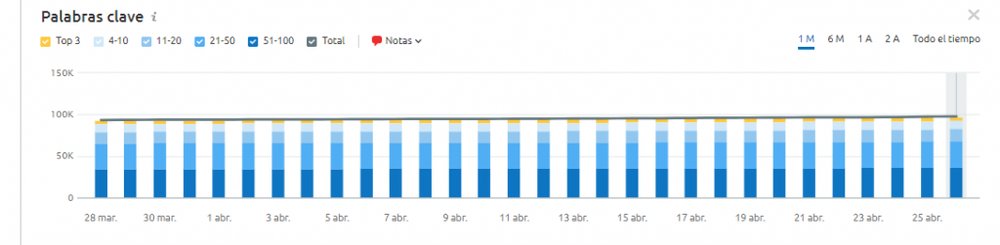

Tomar decisiones acertadas y con alto impacto en los resultados es lo que todo gestor de Marketing desea. Para que esto se consiga, las técnicas del análisis de datos deben ser las más efectivas,
que permitan conocer la eficiencia de
una estrategia minuciosamente y anticiparse a las oportunidades.
Hoy en día, los equipos de Marketing Digital cuentan con muchas tecnologías para realizar sus tareas, sobre todo aquellas que forman parte de la transformación digital, por ejemplo:
No sería prudente ir al meollo de este artículo sin antes mencionar a aquellas habilidades fundamentales que favorecen a cualquier equipo o individuo en el análisis de datos. ¡Conócelas a continuación!
No seremos muy extensos en esta parte, solo hablaremos de las competencias que consideramos son las más importantes y por qué.
Parte del proceso de análisis requiere de ordenamiento de todos los datos en limpio para determinar patrones e insights. Asimismo, con la cantidad de información y herramientas que se manejan en esta tarea, el orden es el mejor aliado, incluso para evitar la tendencia de analizar un montón de números que no representan prioridades.
Gran parte del trabajo de un analista de datos es determinar, a través de modelos matemáticos y estadísticos, desviaciones estándar, regresiones, media aritmética y otras fórmulas para la toma de decisiones.
Analizar objetivamente las preguntas, hipótesis y los resultados que se obtienen es una habilidad imprescindible en el medio. De esta manera se obtienen datos más relevantes y se pueden relacionar entre sí.
Identificar oportunidades, encontrar problemas e idear soluciones también es tarea del que analice datos. Es crucial que puedas encontrar incluso aquellos problemas más complejos para pensar rápidamente en una forma de solucionarlos y aprovecharte de ello. Ahora bien, con esto presente, podemos explicar cuáles son esas técnicas de análisis de datos más eficaces del momento.
El análisis de datos ha mejorado gracias a las fuentes que proporcionan esta información, donde el enfoque creativo de los equipos es valor fundamental para aprovechar y desarrollar nuevas ideas para utilizar la data. Ahora bien, esto va acompañado de ciertas técnicas que facilitan mucho el proceso, dentro de las más importantes están:
Es una técnica de análisis de datos avanzada que involucra al Big Data para medir la efectividad de difusión a través de un canal específico.
Para ello, se utilizan vinculaciones entre
las estadísticas de Marketing que se generan con otros métodos de venta.
Normalmente, se incluyen variables como factores de estacionalidad, actividades de competidores y campañas promocionales, para determinar los efectos interactivos
y cambios en los segmentos e individuos.
Este mecanismo puede ser utilizado para entender la participación de cada medio de comunicación en la generación de nuevos clientes dentro de un período determinado.
Por ejemplo, suponte que
se nota un crecimiento de las oportunidades de negocio que llegan a tu empresa a partir de una Landing Page que recién lanzaste en tu blog.
Este dato puede significar que la
página ha tenido un buen rendimiento y puede servir como un modelo exitoso para las demás, lo que permitirá interpretar que vale la pena invertir más en este canal.
El Reach, Cost and Quality es una forma de usar datos y juicios estructurados, reduciendo los canales hasta sus componentes, por ejemplo:
Y, hablando de las técnicas de análisis de datos, es utilizada cuando casi todo lo demás no se puede aplicar, es decir, cuando la información es limitada, cuando existe una rutina consistente todo el año o, cuando los efectos marginales de las inversiones son difíciles de medir.
Esta es una representación de la realidad para encontrar la relación entre algunas variables. La técnica requiere de tecnologías de la información, parte de la transformación digital,
Big Data y habilidades de gestión.
Gracias a esta herramienta, se pueden encontrar oportunidades de negocio, conocer la cuota de mercado, identificar segmentos, en fin, un cúmulo de información para tomar decisiones basadas en datos que
le generen la mayor rentabilidad y dividendos a las estrategias de Marketing y Ventas.
Para la ejecución del Marketing Digital, la atribución forma parte de los métodos de acercamiento más novedosos.
Este modelo permite utilizar algoritmos y reglas para gestionar los recursos disponibles eficientemente en aras de convertir
y vender. Por ejemplo, a la hora de comprar anuncios online, campañas de email, entre otros.
Además, les permite a los profesionales de marketing y programación decidir
cuán útil es cada canal para el éxito de las conversiones.
Con el uso de técnicas de regresiones, algoritmos avanzados y modelos estadísticos se generan mayores perspectivas de la realidad de la estrategia y se optimizan los canales.
La analogía que se hace más clara para comprender este análisis es con el fútbol.
Cuando el jugador anota un gol luego de haber recibido un pase espectacular e improbable, ¿qué porcentaje de participación se le atribuye al que lo
anotó y al que le dio el pase? Dependiendo de las circunstancias será mayor o menor.
En el ámbito del Marketing pasa lo mismo.
Si un cliente tuvo su primera interacción con la empresa a partir de las redes sociales, pero antes de
convertirse en consumidor accedió a muchas páginas del blog, hay que realizar un modelo de atribución para entender qué tan eficientes fueron esos canales en toda la jornada del cliente.
Esta secuencia de valores que se observan por un período de tiempo determinado y se ordenan cronológicamente sirven para, entre muchas otras cosas, estimar valores futuros de una variable específica en función de su comportamiento histórico.
Este tipo de técnica es ampliamente utilizada, como modelo matemático de predicción, por equipos de Marketing y Ventas para prever tendencias, aprovechar oportunidades de todo tipo y ajustar estrategias de, por ejemplo:
Evidentemente, los valores que resultan del análisis de series temporales no son totalmente exactos, pero siguiendo una regularidad en la serie y, las fórmulas correctas, es posible modelar y, con ello, prever los resultados.
Este modelo
es muy interesante para el manejo de un blog, por ejemplo. Al definir las metas de crecimiento de ese canal en los próximos meses, hay que tomar por referencia su comportamiento en los anteriores.
En meses de alta temporada muchos profesionales
suelen salir de vacaciones, por lo tanto el volumen de accesos en tu blog puede ser menor. Esa variable y otras deben tenerse en cuenta para que el análisis no se contamine.
Ahora bien, es importante aclarar que, si bien recolectar información
es parte fundamental del proceso de las técnicas de análisis de datos, el qué hacer con esto es el otro pilar. Si quieres saber más, ¡sigue leyendo!
Una vez que tengas todos los datos ordenados y limpios — parte de las habilidades que favorecen al buen análisis de datos — lo más crítico es que entiendas qué significan y que tipo de información tienes tras todos los números y comportamientos.
Saber interpretar los datos es uno de los retos más cruciales a los que se enfrentan los equipos de Marketing en la búsqueda de tomar decisiones precisas y relevantes, permitiendo que cada miembro pueda alcanzar más autonomía.
Un
profesional de Marketing debe recolectar los datos de todas las herramientas que utilice, registrarlos bien en forma de documentos y combinar las variables que muestren el nivel
de interpretación, lo que es la antesala a la toma de decisiones o, al menos, una lluvia de ideas de acciones a realizar.
¿Cómo hacerlo eficientemente? Por ejemplo, en el caso del análisis de desempeño de un blog, herramientas como
Google Analytics y SEMRush, son las preferidas por los marketeros. Te contamos por qué en la siguiente tabla.
| Herramienta | Descripción |
|---|---|
| Google Analytics |
Esta herramienta de Google permite que cualquier equipo o persona, pueda analizar la receptividad de su audiencia ante los materiales que le ofrece y, por supuesto,
la efectividad en cuanto a las técnicas de atracción.
Además de todo esto, lo hace mediante una interfaz intuitiva y muy práctica. Sin importar tu nivel de conocimiento sobre ella, podrás dominarla en poco tiempo. |
| SEMRush |
Es una herramienta popularmente utilizada para monitorear palabras clave, procesar análisis de datos para SEO y SEM, además de proveer la optimización general para las estrategias de Marketing de Contenidos.
 Con estas herramientas podrás conseguir una observación mucho más profunda del entorno de tu empresa y, entregar mejores análisis y predicciones para generar los resultados que espera tu equipo. |